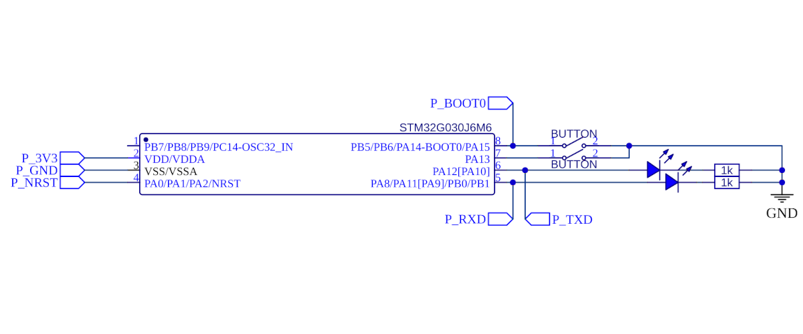

Back to tatiaart.github.io/Progress
Back to tatiaart.github.io/Progress
Back to tatiaart.github.io/Progress
Back to tatiaart.github.io/Progress
 Download this package
Download this packageThe schematic from the GPIO example is reused. This time around, the LEDs will display activity on the UART tx and rx lines, and the buttons are used as inputs.

#TODO: Describe code
/*
STM32Duino UART basic example
Periodically print a hello world message over a connected uart module.
12.12.2024
Artem Tatianin
*/
HardwareSerial myserial(PA_10_R, PA_9_R);
void setup() {
//Initialize serial and wait for port to open:
myserial.begin(115200);
while (!myserial) {
}
}
void loop() {
delay(1000);
myserial.print("Hello world!\r\n");
}
/*
STM32Duino UART echo example
Print back the ascii values of bytes received over UART.
12.12.2024
Artem Tatianin
*/
HardwareSerial myserial(PA_10_R, PA_9_R);
void setup() {
//Initialize serial and wait for port to open:
myserial.begin(115200);
while (!myserial) {
}
}
char incomingByte;
void loop() {
if (myserial.available() > 0) {
incomingByte = myserial.read();
myserial.print("I received: ");
myserial.println(incomingByte, DEC);
}
}
./buttonbuffer/buttonbuffer.ino
/*
STM32Duino UART button operated buffer example
Collect characters received over UART into a buffer.
Send the buffer contents over UART once a button is pressed, and reset the buffer.
12.12.2024
Artem Tatianin
*/
HardwareSerial myserial(PA_10_R, PA_9_R);
void setup_gpio(){
GPIOA->MODER &= ~(0b11 << 2 * 14); // Set PA14 as input
GPIOA->PUPDR &= ~(0b11 << 2 * 14); // Enable pull-up on PA14
GPIOA->PUPDR |= (0b01 << 2 * 14);
}
void setup() {
setup_gpio();
myserial.begin(115200);
while (!myserial) {
}
}
char buffer[256];
int buffer_end = 0;
int millis_at_last = 0;
bool button_pressed = 0;
void loop() {
if (myserial.available() > 0) // If any data is available to be received, save it to the buffer.
{
buffer[buffer_end++] = myserial.read();
buffer[buffer_end] = 0;
millis_at_last = millis();
}
if(!(GPIOA->IDR & (0b1<<14))) // If PA14 is low and the buffer isn't empty, send the buffer. Then reset the buffer end position.
{
if(!button_pressed){
if(buffer_end != 0){
myserial.printf("Received last at %d: ", millis_at_last);
myserial.print(buffer);
myserial.print("\r\n");
buffer_end = 0;
}
else{
myserial.print("The buffer was empty. \r\n");
}
}
button_pressed = 1;
}
else{
button_pressed = 0;
}
}